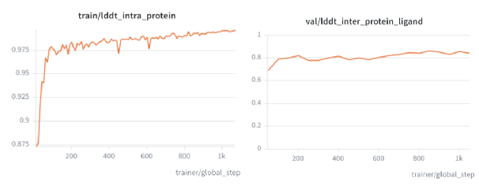
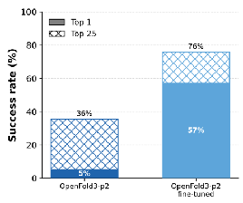

When using a cofolding model in a drug discovery campaign, ideally the model should reflect the most up-to-date structural information available for the target. New structures may have recently been deposited in the PDB, or new experimental structures may be generated as the campaign progresses.
Can a cofolding model be fine-tuned on new structural data and improve its performance on related structures? We recently explored this question using the first OpenBind data release, and found that fine-tuning OpenFold3 on fragment-bound structures improved its predictive performance on related follow-on compounds. We find this works well when the binding mode is conserved between fragment and follow-on compound.
In this post, we will walk through what that workflow looks like in practice. We will process the data into the correct format for OpenFold3 training data, and show how to fine-tune the model locally on NVIDIA DGX Spark.
The accompanying repository can be found on GitHub.
1: Dataset preparation
To get started with fine-tuning, we recommend getting things working using two structures from the OpenBind data release. The same procedure can also be applied to the entire dataset downloaded from Zenodo.
python runners/prepare_zenodo_data.py --input_dir example/single_structure_ft/dataset_raw --output_dir {folder path}This dataset preparation script performs a number of unique tasks compared to typical PDB processing:
- Monomerization: When a protein is crystallized, the crystallized unit is sometimes a dimer. Biologically, however, this protein functions as a monomer, and virtual screening is done using a monomer, so we take the protein chain that is bound to the ligand. In typical PDB processing, the first bioassembly is taken.
- Creating a custom CCD: The chemical component dictionary (CCD) is responsible for specifying the connectivity of the molecules specified in the training set. For structures taken from the PDB, you can use the CCD provided by the PDB. However, if you are training on novel chemical matter, such as in this case, it is necessary to modify the CCD to specify the novel ligands.
After this is done, the standard data processing can be applied, which performs the following:
- Sequence clustering: Associate identical sequences together into the same cluster. This ensures that data sampling works properly, and redundant MSAs are not generated.
- MSA generation: For each unique sequence, generate an MSA. Here, we use ColabFoldDB’s API for MSA construction, although for larger-scale MSA generation, you would want to download the sequence database locally.
- Metadata cache creation: All of the data is summarized into a single metadata cache that captures information relevant to each target.
More typically, you may want to train on structures already in the PDB. You can search a sequence database constructed from PDB entries using MMseqs2 (which has GPU-accelerated variants) or other search methods. We have also provided a script that can take a folder of .cif files from the PDB to prepare a dataset.
python runners/prepare_pdb_data.py --input_dir {folder of .cif files} --output_dir {folder path}2: Creating your train/validation caches
Once your dataset is prepared, you can choose what subset to use as training, and what portion to use as validation. Assuming you have a list of ids for train and validation, you can run the following:
python runners/create_dataset_cache.py train --ids {train_ids.txt} --dataset_dir {folder path}
python runners/create_dataset_cache.py validation --ids {val_ids.txt} --dataset_dir {folder path}In our example, we have just a single training structure and a single validation structure.
This step creates the files that will be used next to define the model’s training and validation datasets. We recommend manually inspecting the caches at this point to ensure that data processing has worked as expected, and that the clustering and chains you expect are all present. Other things to look out for:
- The PDB can occasionally have incorrectly annotated structures. For instance, we have observed very occasionally that the ligand of interest may not be in the first bioassembly and thus gets dropped from processing.
- For custom datasets, make sure the structural resolution field is specified; examples without a resolution value are ignored by the confidence head and therefore do not contribute to updating it during training.
The training and validation caches can subsequently be subset to just the entries that you want to train and validate on. We often generate caches using entries that are the union of all configurations we want to try, so we can easily subset them later. We highly recommend creating a training and validation set with a single structure that you can use for all of your initial testing to make sure you can overfit on a single structure.
3: Preparing training set YAML
Now that the dataset has been prepared, you have to prepare a training YAML that specifies the newly generated training and validation datasets. If you’re using structures processed from the PDB, you can just use the CCD file provided by the PDB.
alignments_directory: none
alignment_db_directory: none
alignment_array_directory: {dataset_dir}/alignment_arrays
dataset_cache_file: {dataset_dir}/caches/train_cache.json
target_structures_directory: {dataset_dir}/preprocessed/structure_files
target_structure_file_format: npz
reference_molecule_directory: {dataset_dir}/preprocessed/reference_mols
template_cache_directory: none
template_structure_array_directory: {placeholder directory}
template_structures_directory: none
template_file_format: npz
ccd_file: {dataset_dir}/merged_cifs/reference_data/components_harmonized.cifHyperparameters
Besides the dataset, the training YAML is where you specify important hyperparameters relevant to training:
- Batch size: Specify the global batch size. Base OpenFold3 training uses a 256 batch size, but for small homogenous finetuning datasets like the one we have here, we have found that small batch sizes (4 or 8) are sufficient. If you’re training on a single GPU you may need to use gradient accumulation.
- Learning rate: For a batch size of 8, we have empirically found a learning rate of 0.0003 to work well (or any number in that vicinity), but you may need to retune the learning rate for a different batch size or if your dataset is more heterogeneous. The learning rate is the most impactful hyperparameter to tune.
- Crop token budget: This is how many tokens the model sees per example. Base OpenFold3 uses 384 during its initial training. For protein-ligand fine-tuning, a crop size of 384 is sufficient (requiring about 30–40 GB of GPU memory when kernels are used), but to further decrease GPU memory, you can decrease the maximum token size of your dataset (if less than 384). The number of tokens the model sees during training per example is always padded to the crop size, so you will see significant memory and speed savings if you can set this to a smaller crop size.
- Warm up steps: We have found 100 step warmups to be sufficient. For full parameter fine tuning on a small number of structures, the model will fit very quickly so some amount of warmup is helpful so the metrics do not immediately saturate.
- EMA decay: For OpenFold3 training, this is set to 0.999 (half-life ~700 steps), but we lower it to 0.9 (half-life ~10 steps) to be able to observe the impact of fine-tuning more quickly. For low-rank fine-tuning, it is unnecessary to use EMA.
Be sure to turn on GPU kernels as well, such as CuEquivariance for triangle operations. This will dramatically decrease the memory required for training, and increase the speed.
4: Start training!
With your completed training cache, you can now launch your training run. On a Slurm based system, you can use the srun command to facilitate multi-node training.
srun python -m openfold3.run_openfold train \
--runner_yaml "${RUNNER_YAML}" \
--seed "${SEED}"Here, we fine-tune OpenFold3-p2 on the 79 fragment-bound structures for 1,000 steps using a batch size of 8, a learning rate of 3e-4, and a 100-step linear warmup. This takes approximately eight hours on eight NVIDIA GH200 GPUs, or 50 hours on a single desktop GPU in a DGX Spark. Depending on the target or the amount of data, it may take more or less time. As GPU kernels become more efficient, this fine-tuning time will also decline.

After training, we have a new OpenFold3 checkpoint that can be run through the same inference pipeline as the base model.
Evaluating structural accuracy
Was all this effort worth it? Did the fine-tuning improve the model’s ability to predict follow-on compounds? We find that for this particular drug target, fine-tuning does dramatically improve the predictive capability.

What this means in practice
For this target, a small set of fragment-bound structures could improve pose prediction and virtual-screening discrimination on related follow-on compounds. Fine-tuning could even be done on a single desktop GPU.
In practice, this means a cofolding model does not have to remain fixed during a campaign. As new structures are generated, they can be trained on and used to improve the next round of predictions.
We are still working to understand the conditions under which fine-tuning is helpful. Similar to our colleagues at OpenADMET, we have observed that the similarity of the test entries to training entries is very important for seeing a performance improvement. However, we hope the method described here will help others get started with fine-tuning on their own datasets.
Acknowledgements
Thank you to Etowah Adams and Omeir Kahn for their contributions to the development of this tutorial and workflow.